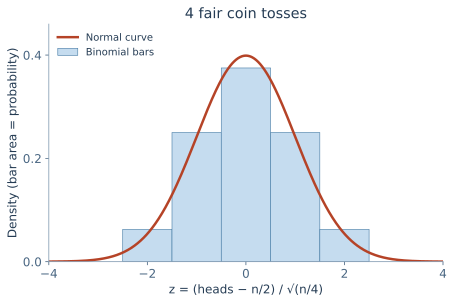
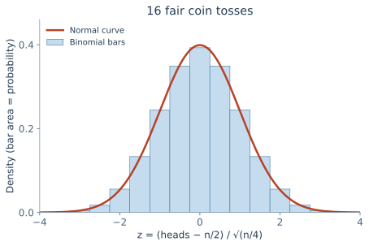
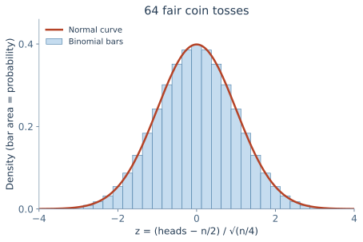
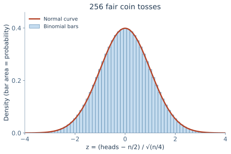
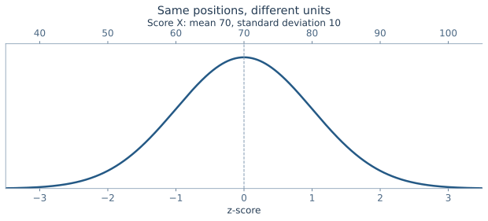
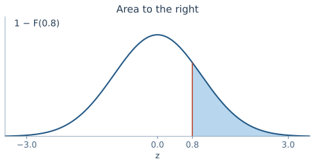
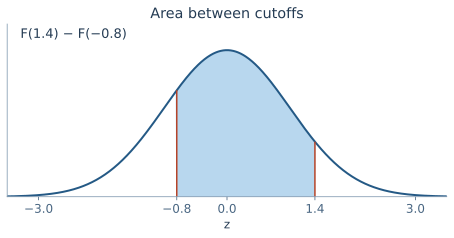

MSC 201 · Combined lecture notes · Sections 6.1–6.2
Normal distributions, z-scores, and probabilities
Open the simplified normal table in a new tabKeep the table open beside these notes. Use a basic calculator for the arithmetic.
Reference
X ∼ N(μ, σ): mean μ, standard deviation σ. In these notes the second parameter is the standard deviation, not the variance.
Standardize: z = (x − μ)/σ. Convert back: x = μ + zσ.
Table: F(z) = P(Z ≤ z), the area to the left. Z ∼ N(0, 1). Multiply F(z) by 100 for a percentile rank.
Right tail: 1 − F(z). Between: F(upper z) − F(lower z).
Empirical rule: approximately 68%, 95%, and 99.7% within 1, 2, and 3 standard deviations.
Table precision: round each calculated z-score to the nearest tenth; use the table’s three-decimal probabilities. For a halfway z-score, round away from zero. For a percentile, use the closest table probability; if tied, use the z-score closer to zero. Do not interpolate. Answers are approximate.
Double-click or double-tap the blank solution area to reveal an answer. With a keyboard, focus that area and press Enter or Space.
From many coin tosses to a bell curve
Let H count heads in n independent fair coin tosses. H is binomial, with mean n/2 and standard deviation √(n/4). Standardize its values using z = (H − n/2)/√(n/4).
The plots use the same axes. Blue bars show exact binomial probabilities; each bar’s area is its probability. The orange curve is the same standard normal density in every plot. Bar heights are rescaled so the total bar area is 1.




As n grows, probabilities over standardized intervals approach areas under the normal curve. Each binomial distribution is still discrete; its bars get narrower after standardizing. The normal distribution is continuous.
Many independent additive effects can also lead to an approximately normal total when variances are finite and no single effect dominates. This does not make every real-world distribution normal. We use a normal model when the problem supplies one.
A normal model and its standard units
A normal curve is symmetric about its mean. Its total area is 1, with half on each side of the mean. The mean, median, and mode coincide. The standard deviation sets the horizontal spread.
Recurring model: X is a score with mean 70 and standard deviation 10: X ∼ N(70, 10).

Find and interpret z
X ∼ N(70, 10). Find z for x = 85, 60, and 70.
- 85: z = (85 − 70)/10 = 1.5, or 1.5 standard deviations above the mean.
- 60: z = (60 − 70)/10 = −1, or one standard deviation below the mean.
- 70: z = 0, at the mean.
A z-score is a position in standard-deviation units, not a probability.
Convert z back to x
X ∼ N(70, 10). Find x when z = −1.2.
x = 70 + (−1.2)(10) = 58. This score is 1.2 standard deviations below the mean.
Compare relative positions
A: mean 70, SD 10, score 85. B: mean 500, SD 80, score 620. Which is farther above its mean in SD units?
A: (85 − 70)/10 = 1.5. B: (620 − 500)/80 = 1.5. Same relative position: both are 1.5 SD above their means.
Use the empirical rule
X ∼ N(70, 10). Give the intervals containing about 68%, 95%, and 99.7%.
- 68%: 70 ± 10 → 60 to 80; endpoint z-scores −1 and 1.
- 95%: 70 ± 20 → 50 to 90; endpoint z-scores −2 and 2.
- 99.7%: 70 ± 30 → 40 to 100; endpoint z-scores −3 and 3.
These are empirical-rule approximations. Rounded table values may give slightly different percentages.
From cutoffs to probabilities
Sketch the curve, mark the cutoff or cutoffs, and shade the requested area. Standardize the cutoffs, round z to a tenth, and use the normal table (new tab).



Read the table
Find F(1.2), F(−0.7), and F(0).
F(1.2) = 0.885; F(−0.7) = 0.242; F(0) = 0.500. These are rounded areas to the left. For example, about 24.2% lie below z = −0.7.
Below a cutoff
X ∼ N(70, 10). Find P(X < 63) and the percentile rank of 63.
z = (63 − 70)/10 = −0.7. Shade left of 63. P(X < 63) ≈ F(−0.7) = 0.242 = 24.2%. A score of 63 is at approximately the 24th percentile.
Above a cutoff
X ∼ N(70, 10). Find P(X > 83).
z = (83 − 70)/10 = 1.3. Shade right of 83. The table gives the other side: F(1.3) = 0.903. P(X > 83) ≈ 1 − 0.903 = 0.097 = 9.7%.
Round before looking up
X ∼ N(70, 10). Find P(X < 76.4).
z = (76.4 − 70)/10 = 0.64. Round to 0.6. P(X < 76.4) ≈ F(0.6) = 0.726 = 72.6%. This is a coarse table approximation to the original cutoff, not an exact probability.
Between and outside
X ∼ N(70, 10). Find P(62 < X < 84), then the probability outside that interval.
Endpoint z-scores: −0.8 and 1.4. Shade between them. P(62 < X < 84) ≈ 0.919 − 0.212 = 0.707 = 70.7%.
Outside: shade both tails. 1 − 0.707 = 0.293 = 29.3%. Equivalently, 0.212 + (1 − 0.919) = 0.293.
A single point and an endpoint
X ∼ N(70, 10). Find P(X = 70). Do P(X < 63) and P(X ≤ 63) differ?
P(X = 70) = 0. A single point has no area. Including the endpoint does not change a continuous probability, so both cutoff probabilities are approximately 0.242. A curve’s height is not a point probability.
From probabilities to cutoffs
A percentile is a cutoff with a stated percentage below it. Start with the area to the left, find the closest table probability, read z, and convert back using x = μ + zσ. Our coarse table gives approximate cutoffs.
A percentile
X ∼ N(70, 10). Find the 90th percentile.
Left area = 0.900. The closest table entry is 0.903 at z = 1.3. x ≈ 70 + 1.3(10) = 83. About 90% of scores lie below this cutoff; the rounded table gives 90.3%.
An upper-tail percentage
X ∼ N(70, 10). Forty percent score at least what value?
Right area = 0.400, so left area = 0.600. The closest table entry is 0.618 at z = 0.3; 0.579 at z = 0.2 is slightly farther away. x ≈ 70 + 0.3(10) = 73. This approximates the 60th percentile; the table implies about 38.2% above it.
Median, quartiles, and IQR
X ∼ N(70, 10). Find the median, Q₁, Q₃, and IQR.
- Median: left area 0.500 → z = 0 → 70.
- Q₁: target 0.250 → closest entry 0.242 → z = −0.7 → 63.
- Q₃: target 0.750 → closest entry 0.758 → z = 0.7 → 77.
- IQR ≈ 77 − 63 = 14.
The approximate middle-50% interval is 63 to 77. Using the rounded table, its area is 0.758 − 0.242 = 0.516.
A specified middle percentage
X ∼ N(70, 10). Find the interval containing the middle 80%.
Outside area = 1 − 0.80 = 0.20. Split it into two tails of 0.10. The endpoints are the 10th and 90th percentiles.
Closest left-area entries: 0.097 and 0.903 → z = −1.3 and 1.3. Convert back: 70 ± 1.3(10) → 57 to 83. The rounded table gives 80.6%, close to the requested 80%.
Practice
Use the same rounding rules. For probability questions, sketch and shade the region. For cutoffs, interpret the result.
Positions and spread
X ∼ N(50, 8).
- Find and interpret z for x = 62.
- Find x when z = −1.2.
- Give the empirical-rule 68%, 95%, and 99.7% intervals.
- z = 12/8 = 1.5, or 1.5 SD above the mean.
- x = 50 − 1.2(8) = 40.4.
- 42–58, 34–66, and 26–74; endpoint z-scores ±1, ±2, and ±3.
Probabilities
X ∼ N(50, 8).
- Find P(X < 44.4).
- Find P(X > 60.4).
- Find P(43.6 < X < 61.2).
- Find the probability outside that interval.
- z = −0.7 → 0.242.
- z = 1.3 → 1 − 0.903 = 0.097.
- z = −0.8 and 1.4 → 0.919 − 0.212 = 0.707.
- 1 − 0.707 = 0.293.
Cutoffs
X ∼ N(50, 8).
- Find the 80th percentile.
- Ten percent lie above what value?
- Find Q₁, Q₃, and IQR.
- Find the middle-60% interval.
- Target 0.800 → closest entry 0.788 → z = 0.8 → x ≈ 56.4. About 80% lie below it.
- Left area 0.900 → z = 1.3 → x ≈ 60.4. About 10% lie above it.
- z ≈ −0.7 and 0.7 → Q₁ ≈ 44.4, Q₃ ≈ 55.6, IQR ≈ 11.2.
- Tails = 0.20 each. Target left areas 0.200 and 0.800 → z ≈ −0.8 and 0.8 → 43.6 to 56.4. Table area: 0.788 − 0.212 = 0.576, approximately 60% at this coarse precision.